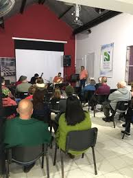
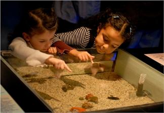
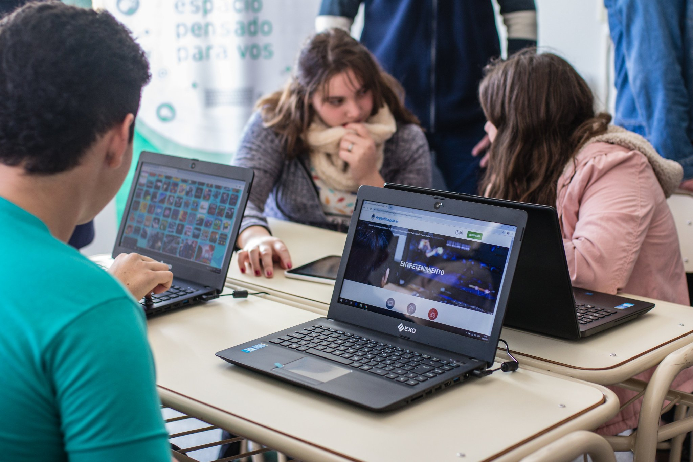
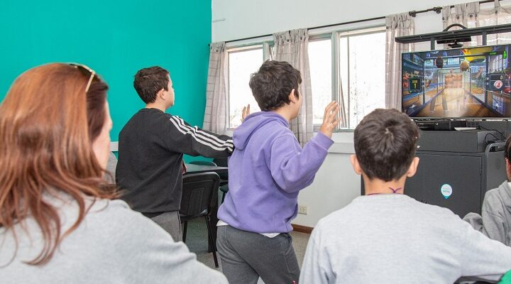

MUSEO MUNICIPAL "DR. BERNARDO DE IRIGOYEN"
MUSEO MUNICIPAL "DR. BERNARDO DE IRIGOYEN"

Este Museo histórico fue inaugurado el 12 de mayo del 2001, como parte de los festejos de la creación del Pueblo. Fue la culminación de un largo proceso que un grupo de rodriguenses vino realizando desde la dácada del 60, y que fuera interrumpido por los procesos de los gobiernos de factos (golpes de estado). La Municipalidad adquirió la propiedad de la familia Boyer, ubicada en la calle Sarmiento 518, a metros de la cancha de Alem; era intendente electo en ese momento el Prof. Oscar Di Landro. El día de la inauguración fue una verdadera fiesta popular y además concurrieron descendientes de Martín Rodríguez y de Bernardo de Irigoyen, coronada con la multitudinaria participación de las y los vecinos.
En la actualidad se está readecuando la Sala central de exposiciones, donde se realizarán muestras temporarias de diferentes temáticas.
Por otra parte, en estas instalaciones funciona el ARCHIVO HISTÓRICO MUNICIPAL "MANUEL GONZÁLEZ", donde se resguardan los distintos documentos históricos, libros, expedientes municipales del Departamento Ejecutivo y del Concejo Deliberante, diarios, revistas, fotografías y toda variedad de documentación que son una fuente fidedigna para los trabajos de investigación.
Además en el edificio ubicado detrás del Museo se encuentra la BIBLIOTECA MUNICIPAL “ENRIQUE CADICAMO”, que presta los servicios de atención en sala, préstamo de libros, y extensión bibliotecaria.
Como nexo de las tres instituciones funciona el PUNTO DIGITAL, que originariamente fuera el NAC (núcleo de acceso al conocimiento), que consta de un Microcine, y una Sala de Cómputos donde se ofrece servicio de internet y wi-fi.
¿Qué encontramos en el museo?

Charlas, debates, presentaciones de libros, muestras fotográficas, etc. Muestras temáticas temporarias.
Recorrido circuito urbano. Recorrido circuito rural.
El Museo y la Escuela: visita a los establecimientos escolares que lo soliciten.
 Visitas guiadas a grupos escolares (inicial, primaria, secundaria, terciario). Recorridos personalizados en sala. Apoyatura y seguimiento para los distintos trabajos de investigación.
Punto Digital

La iniciativa de inclusión digital y capacitación tecnológica más extensa de la Argentina.
Los Puntos Digitales forman una red federal que, a través de espacios públicos y gratuitos, brindan conectividad, capacitaciones, talleres y actividades culturales para personas de todas las edades.
-  Aprendizaje Cursos de capacitación digital y de formación laboral.
-  Entretenimiento Consolas de videojuegos.
-
 Cine
Proyección de películas y documentales.
Cine
Proyección de películas y documentales.
- Conectividad Wi-Fi Conección libre con dispositivos portátiles.